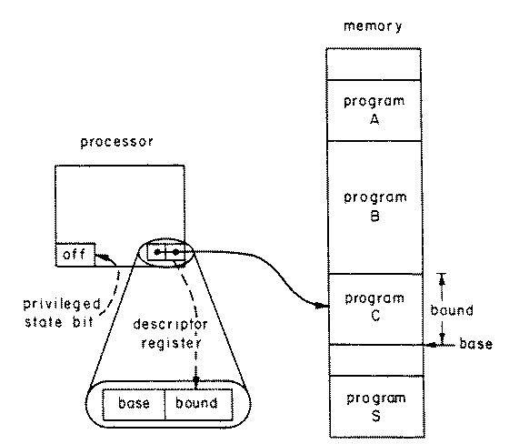

Fig. 1. Use of a descriptor register to simulate multiple virtual machines.
Program C is in control of the processor. The privileged state bit has
value OFF, indicating that program C is a user program. When program S
is running, the privileged state bit has value ON. In this (and later)
figures, lower addresses are nearer the bottom of the figure.